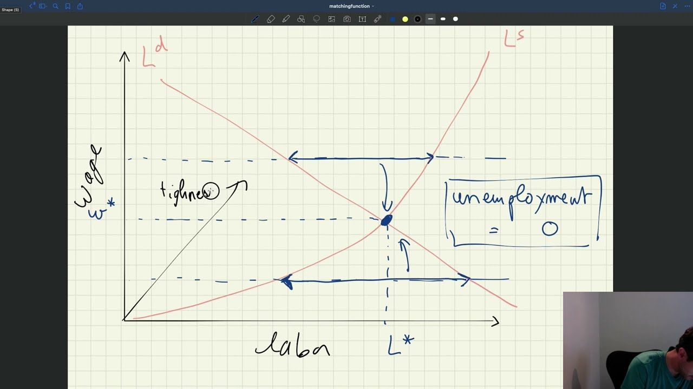

In a typical labor market model, the labor market is represented by a price on the y-axis and a quantity on the x-axis. The demand for labor is usually a decreasing function of the wage, and the supply is usually an increasing function of the wage, as shown in the following diagram:
The equilibrium is at the intersection of the supply and the demand, which gives the quantity of labor $Q^*$ and the wage $W^*$. In this competitive setup, if the wage is above $W^*$, then there are more people who want to work at that wage than currently have jobs. In response, people will lower the wage they require and the wage will eventually reach the equilibrium. If the wage is below $W^*$, then firms will offer higher wages until they can hire enough workers. Thus, the wage will always adjust until it reaches the equilibrium where supply equals demand.
The key property here is that unemployment is always zero because the market is always in equilibrium. This competitive paradigm does not allow for any unemployment, so economists must develop a new way of thinking about markets. To this end, one should introduce a new variable called tightness, which generalizes the two-dimensional graph to a three-dimensional market. Tightness is a measure of how many people are available to work compared to the number of jobs available. With this new variable, the market can now move away from the competitive paradigm and allow for unemployment.